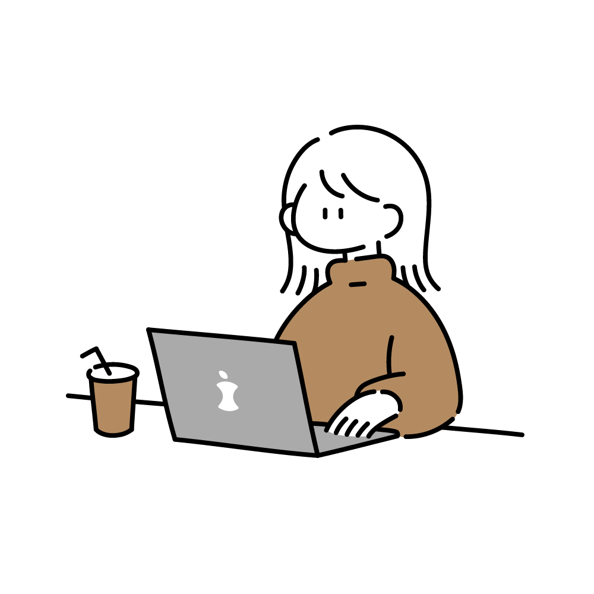

About
名前：田尾海結
得意なスタイル：シンプルやナチュラルなデザインを得意としています。
制作のこだわり：動画の内容に合わせたBGM選びを徹底し、視覚と音の調和を大切にしています。
使用ソフト：
動画編集 → Premiere Pro/After effects
画像・デザイン → Photoshop/illustrator
専門学校でソフトの基礎講習の経験あり
「動画とWebデザインで"見える"世界を作る」
クライアントの希望を形にし、
"またお願いしたい"と思ってもらえるようなクリエイターを目指しています。

Skill

動画編集
Vlog編集を中心に、解説系など他ジャンルも対応可能です。
編集ソフト：Premiere Pro(動画編集全般)
After effects(アニメーションや映像加工の一部に使用)
撮影
構図や光の見せ方を工夫し、Vlogなどの映像作品を作成しています。
使用機材：Pixel7a(現在)
画像作成
動画に使用する画像や、サムネ、バナー、ロゴなどを作成しています。
使用ソフト：Photoshop/illustrator